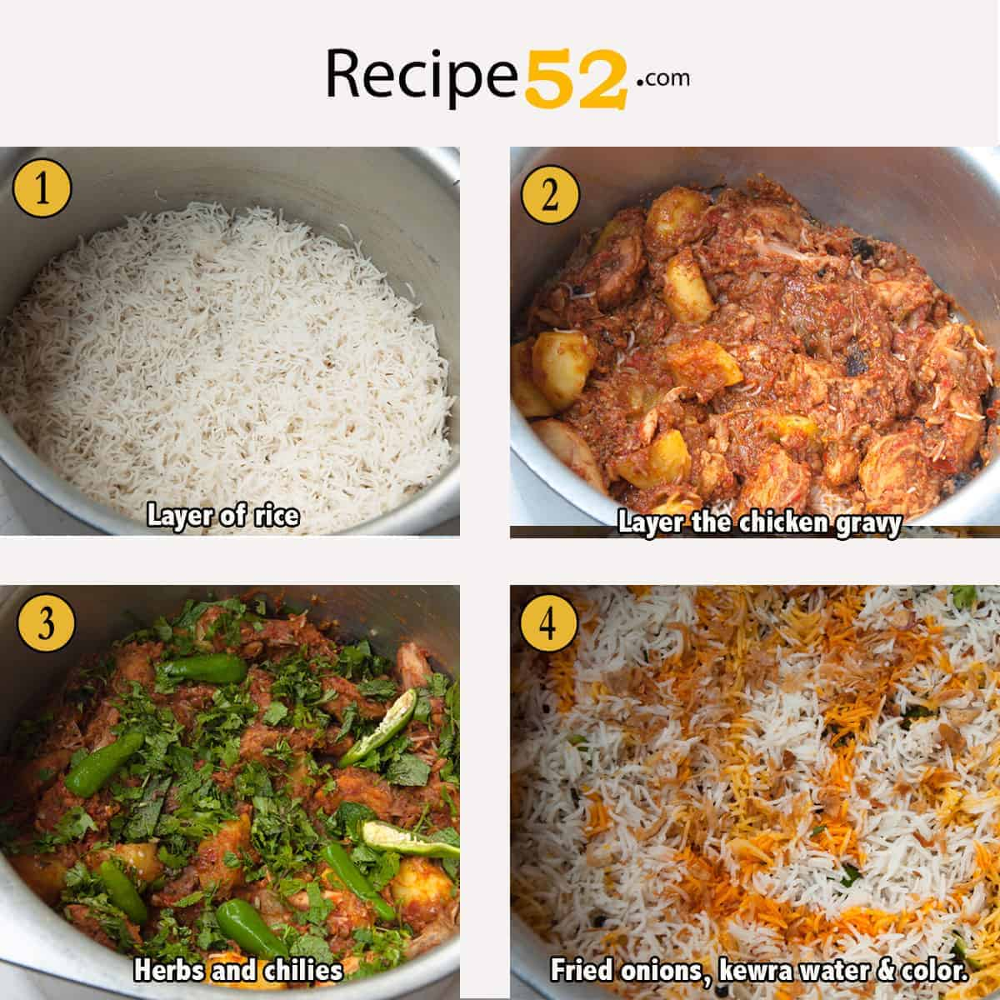

Biryani Recipe:

INGREDIENTS TO MARINATE CHICKEN:
Below, you'll find the illustration of the ingredients of chicken marination. Most of the spices are common. If you can't find anything like bay leaf, you can skip it. Three ingredients that I didn't use but are often added to Pakistani biryani are mace, nutmeg, and black cumin. All three spices add to the aroma of biryani and use very little of each if you do.
Some Steps To Follow:
Mix well and let it sit for 20 minutes or preferably overnight. (Protips: This step makes chicken soft and juicy.) Fry onions on medium heat until golden, stir frequqently toward end for even cooking. When sliced onions begin to turn golden, you'll be able to see strands of onions seperate visible from each other. This steps need some patience but it's totally worth it. ( Protip: You can also use 1 packed cup of pre-fried onions.) Add the marinated chicken and stir fry for 7-10 minutes until the color of chicken changes completely and the moisture from yogurt dries out. You see little oil seperating on the sides of the pot. (Protip: This allow the spices in marinated chicken to release flavors.) Add tomato puree, mix well and cover the pot. Cook further for 10-15 minutes on medium flame until water dries and oil separates. (Bhunofy) This step is important.
For Rice:
We need to do rice and chicken steps simultaneously while the chicken marinates and onions are turning golden.
Have a look at the ingredient of rice. Some whole spice are repeated again because we need the rice to be aromatic and full flavors on their own. Wash rice and soak in water for 20 minutes or as suggested on the pack. (Protip: This step is important as it allows the grain to expand at it best and also reduces the cooking time of rice with even cooking. Go for best quality basmati rice here as basmati unlike other rice absorbs flavors.) Boil water with all spices and salt. The water must have soupy salt level or rice will be bland. When the water color changes as the spices release flavors in the water, add soaked rice. Cook until 70% is cooked. (2 kaani chawal). (Protip: The water should be aromatic. Once the water is fully boiled and has changed color you may remove big spices with a slotted spoon only if you hate whole spices, not recommended.) Stay around the rice while boiling and check frequently. You can test rice grain by pressing between index finger and thumb. The rice should be firm and cooked, not at all mushy. Transfer the boiling rice to a colander to drain hot water. Put a little oil on rice so rice grains are well separated. Set aside.
OTHER PREPS, WHILE THE CHICKEN IS MARINATING AND THE RICE IS COOKING:
You can skip potatoes if you wish. Half boiled peeled potatoes with salt and tumeric. (Protip: Tumeric gives a vibrant color. You can use yellow or orange food color too.) Then fry potatoes in oil with a pinch of salt until golden. Save the oil for later use in layering. (Protip: You may fully boiled potato and skip frying.) Set the potato aside. Now let get back to the chicken gravy. Have a look at the gravy now. The chicken is tender and oil is visible on the top. Mix in prunes and switch off heat. Also add cooked potatoes. At this stage, add gram masala powder for strong aroma. Gravy for biryani is ready. (Protip: We want thick and runny gravy for biryani and not dry. It is the gravy that gets absorbed in rice and provides flavors. If incase gravy is dry add a little water and make it runny.) Do a taste test. We want gravy to spicier than you'll like. As after mixing with rice, spices will be slightly undermined.
FOR LAYERING:
We are getting to our favorite part. You can do all the above steps a day ahead. Except for any rice steps which need to be done on the same day of serving for fresh chicken biryani taste.
Smear 2 tablespoon oil (from fried potato) on the bottom of the heavy-based pot for crunchy khurchan. Divide rice roughly into two parts. Spread a little more than ½ of total rice at the bottom of the pot. Now, evenly divide and layer the chicken pieces, potatoes, and gravy into second layer. Now spread the herbs and chillies (optional) on the chicken. Spread the last layer of remaining rice. On this layer, add kewra essence, saffron and/or food color soaked in ½ cup water. Make sure to spread evenly. Then drizzle 4-6 tablespoons of oil all over the last layer of rice. You may add fried onions on top. (Protip: Fry a small onion in leftover potato oil and use same fragrant oil to drizzle on last layer of rice in step 4.) Seal the pot with foil, ( or use damp towel or thick cloth and tie all four ends over the lid.) Cover tightly with the lid. (This sealing technique of rice is called 'dum dena' in Urdu.) Dum helps the rice cook completely while absorbing the flavors of gravy and with drizzled oil. Heat the pot on high for 5 to 7 minutes until pot is hot. ( Protip: Test by spraying a little water on the side of pot, if water evaporates immediately with sizzling sounds. The pot is hot enough. ) Now reduce heat low-medium and let the steam rise inside the pot. This should take 15 minutes. When you see a thick steam after removing lid, it means biryani has reached dum stage, if not continue to cook.
Serve Pakistani Chicken Biryani right after dum with salads and chutney.
If you find my protips and explanation helpful. I'd love to know in the comments.
Location:
Our Hotel & Resturent
You Are Requested To Visit Our Hotel / Resturent For More Information About Our Services.
Contact - Us
Contact Us For Your Any Query.
Rate - Us
Also Do'nt Forget To Rate Us.